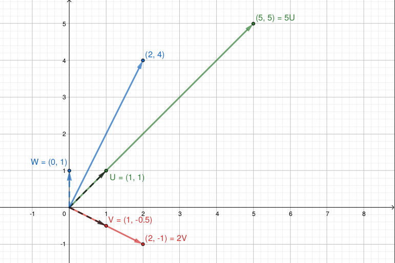

6 Autovalores y Autovectores
6.1 Generalidades
- Los autovalores y autovectores son esas cosas raras que aparecen por todos lados pero nunca terminamos por entender.
- El objetivo de esta unidad es ver métodos para su cálculo, pero antes vamos a repasar qué son (informalmente, sin rigurosidad, el que avisa no traiciona…)
- En muchas disciplinas los objetos que se estudian se representan con vectores (ej. \(\textbf{x}\), \(\textbf{y}\)) y las cosas que se hacen con ellos son transformaciones lineales, que se representan como matrices (ej. \(\textbf{A}\)).
- Así, en muchas situaciones las relaciones que importan entre esos objetos/vectores se expresan como:
\[\textbf{y} = \textbf{A} \textbf{x}\]
Esto abarca desde sistemas de ecuaciones lineales (presentes casi en todos lados en ciencia) hasta problemas muy sofisticados en ingeniería.
Ahora bien, en general no es muy fácil mirar a la matriz \(\textbf{A}\) y directamente darse cuenta qué es lo que va a pasar cuando se la multipliquemos a \(\textbf{x}\).
Sin embargo, podríamos encontrar casos donde haya una relación muy simple entre el vector \(\textbf{x}\) y el vector resultado \(\textbf{y=Ax}\).
Por ejemplo, si miramos la matriz \(\mathbf{A} = \begin{bmatrix} 0 & 1 \\ 1 & 0 \end{bmatrix}\) y se la multiplicamos al vector \(\textbf{x} = \begin{bmatrix} 1 \\ 1 \end{bmatrix}\), ¡nos da como resultado el mismo vector \(\textbf{x}\)!
Es decir, que para ese vector, es muy fácil ver qué aspecto tiene \(\textbf{Ax}\).
Se puede generalizar esta observación con el concepto de autovectores.
Un autovector de una matriz \(\textbf{A}\) es cualquier vector \(\textbf{x}\) para el que sólo cambia su escala cuando se lo multiplica con \(\textbf{A}\), es decir: \(\textbf{Ax} = \lambda \textbf{x}\), para algún número \(\lambda\) real o complejo, que recibe el nombre de autovalor.
Entonces si una matriz \(\textbf{A}\) describe algún tipo de sistema, los autovectores son aquellos vectores que, cuando pasan por el sistema, se modifican en una forma muy sencilla.
Por ejemplo, si \(\textbf{A}\) describe operaciones geométricas, en principio \(\textbf{A}\) podría estirar y rotar a los vectores, sin embargo, a sus autovectores lo único que puede hacerles es estirarlos, no rotarlos.
Sea: \(\mathbf{A} = \begin{bmatrix} 3 & 2 \\ 1 & 4 \end{bmatrix}\), \(\textbf{u} = \begin{bmatrix} 1 \\ 1 \end{bmatrix}\), \(\textbf{v} = \begin{bmatrix} 1 \\ -0.5 \end{bmatrix}\) y \(\textbf{w} = \begin{bmatrix} 0 \\ 1 \end{bmatrix}\).
En este gráfico podemos ver los vectores antes de transformarlos (multiplicarlos) mediante \(\mathbf{A}\):
- Y en este gráfico podemos ver como quedan luego de la transformación:

\(\textbf{u}\) y \(\textbf{v}\) no cambiaron su dirección, sólo su norma: son autovectores de \(\textbf{A}\), asociados a los autovalores 5 y 2.
En cambio, la matriz \(\textbf{A}\) modificó la dirección de \(\textbf{w}\), entonces no es un autovector.
6.1.1 Definición
Dada una matriz \(\textbf{A}\) cuadradada de orden \(n\), llamamos autovector o vector propio de \(\textbf{A}\) a todo vector \(\textbf{x}\) de orden \(n\) cuya dirección no se modifica al transformarlo mediante \(\textbf{A}\).
- Transformarlo mediante \(\textbf{A}\) significa realizar el producto \(\textbf{Ax}\) dando como resultado un nuevo vector de orden \(n\).
- Que la dirección de \(\textbf{x}\) no se modifique significa que el nuevo vector debe ser múltiplo de \(\textbf{x}\), es decir, igual a \(\lambda \textbf{x}\), con \(\lambda \in \mathbb{C}\), que recibe el nombre de autovalor o valor propio de A.
Lo anterior se resume en la siguiente expresión: \(\textbf{x}\) es un autovector y \(\lambda\) es un autovalor de \(\textbf{A}\) si:
\[\textbf{Ax} = \lambda \textbf{x}, \quad \textbf{x} \neq \textbf{0}, \quad \lambda \in \mathbb{C}\]
Observación
- Se debe observar que si \(\textbf{x}\) es un autovector con el autovalor \(\lambda\) entonces cualquier múltiplo diferente de cero de \(\textbf{x}\) es también un autovector con el autovalor \(\lambda\).
6.1.2 Propiedades
Dada una matriz \(\textbf{A}\) cuadradada de orden \(n\):
- \(\textbf{A}\) tiene \(n\) autovalores, \(\lambda_1, \lambda_2, \cdots, \lambda_n\), los cuales no necesariamente son todos distintos.
- \(tr(A) = \sum_{i=1}^n a_{ii} = \sum_{i=1}^n \lambda_{i}\).
- \(\det(A) = \prod_{i=1}^n \lambda_{i}\).
- Los autovalores de \(\textbf{A}^k\) son \(\lambda_1^k, \lambda_2^k, \cdots, \lambda_n^k\).
- Si \(\textbf{A}\) es real y simétrica todos sus autovalores son reales y los autovectores correspondientes a distintos autovalores son ortogonales.
- Si \(\textbf{A}\) es triangular los valores propios son los elementos diagonales.
- Los autovalores de una matriz y su transpuesta son los mismos.
- Si \(\textbf{A}\) tiene inversa, los autovalores de \(\textbf{A}^{-1}\) son \(1/\lambda_1, 1/\lambda_2, \cdots, 1/\lambda_n\).
- Los valores de \(\alpha \textbf{A}\) son \(\alpha \lambda_1, \alpha \lambda_2, \cdots, \alpha \lambda_n, \, \alpha \in \mathbb{R}\).
- Las matrices \(\textbf{A}\) y \(\textbf{Q}^{-1}\textbf{AQ}\) (forma cuadrática) tienen los mismos valores propios.
6.2 Obtención los autovalores y autovectores
- A partir de la expresión anterior:
\[ \textbf{Ax} = \lambda \textbf{x} \implies \textbf{Ax} - \lambda \textbf{x} = \textbf{0} \implies (\textbf{A} - \lambda \textbf{I}) \textbf{x} = \textbf{0} \]
- Esto es un sistema de ecuaciones lineales con matriz de coeficientes \(\textbf{A} - \lambda \textbf{I}\) y vector de términos independientes \(\textbf{0}\), es decir, es un sistema homogéneo y como tal tiene solución no nula si: \(\det (\textbf{A} - \lambda \textbf{I}) = 0\) (repasar por qué).
- El desarrollo de esta expresión conduce a un polinomio de grado \(n\) en la incógnita \(\lambda\) que igualado a cero es llamado ecuación característica y su resolución permite hallar los autovalores.
Ejemplo
\[\begin{gather*} \mathbf{A} = \begin{bmatrix} 5 & -2 & 0 \\ -2 & 3 & -1 \\ 0 & -1 & 1 \end{bmatrix} \implies \\ \\ det(\textbf{A} - \lambda \textbf{I}) = \begin{vmatrix} 5 - \lambda & -2 & 0 \\ -2 & 3 - \lambda & -1 \\ 0 & -1 & 1-\lambda \end{vmatrix} = \cdots = -\lambda^3 + 9 \lambda^2 - 18 \lambda + 6 = 0 \end{gather*}\]
- Las soluciones de la ecuación característica son \(\lambda_1 = 6.2899, \lambda_2 = 2.2943\) y \(\lambda_3 = 0.4158\), los cuales son los autovalores de \(\textbf{A}\).
Hallar la ecuación característica ya es demasiado trabajoso para \(n=3\), y mucho más será para mayor \(n\)… por eso veremos métodos que directamente nos den los coeficientes de esta ecuación.
- Pero nos faltan los autovectores!
- Para eso hacemos uso de la definición: \(\textbf{A}\) es un autovector de \(\textbf{A}\) asociado al autovalor \(\lambda\) si \((\textbf{A} - \lambda \textbf{I}) \textbf{x} = \textbf{0}\).
Tomamos uno de los autovalores, por ejemplo, \(\lambda_1 = 6.2899\) y resolvemos el sistema de ecuaciones que la expresión anterior plantea:
\[\begin{gather*} (\textbf{A} - 6.2899 \, \textbf{I}) \textbf{x} = \textbf{0} \implies \begin{bmatrix} -1.2899 & -2 & 0 \\ -2 & -3.2899 & -1 \\ 0 & -1 & -5.2899 \end{bmatrix} \begin{bmatrix} x_1 \\ x_2 \\ x_3 \end{bmatrix} = \begin{bmatrix} 0 \\ 0 \\ 0 \end{bmatrix} \\ \\ \implies \begin{cases} -1.2899 x_1 -2 x_2 &= 0 \\ -2 x_1 - 3.2899 x_2 - x_3 &= 0\\ -x_2 - 5.2899 x_3 &= 0 \end{cases} \implies \begin{cases} x_1 = 8.2018 x_3\\ x_2 = -5.2899 x_2\\ x_3 \in \mathbb{R} \end{cases} \end{gather*}\]
- Como se puede ver la solución de este sistema homogéneo no es única, representando los infinitos autovectores asociados a \(\lambda_1 = 6.2899\). Por ejemplo, si elegimos \(x_3 = 1\), obtenemos el autovector:
\[ \textbf{x}_1 = \begin{bmatrix} 8.2018 \\ -5.2899 \\ 1 \end{bmatrix} \]
- En general, se resuelve informando el autovector de norma 1 que sí es único.
- De la misma forma se procede con los restantes autovalores \(\lambda_2\) y \(\lambda_3\).
6.2.1 Resumen 1: Obtener autovalores y autovectores
- Paso 1: desarrollar la expresión de \(\det(\textbf{A} - \lambda \textbf{I})\) para obtener la ecuación característica (muy engorroso para n > 3):
\[ f(\lambda) = \det(\textbf{A} - \lambda \textbf{I}) = \lambda^n + b_1 \lambda^{n-1} + \cdots + b_{n-1} \lambda + b_n = 0 \]
Paso 2: resolver la ecuación característica para hallar los autovalores \(\lambda_1, \lambda_2, \cdots, \lambda_n\). Dependiendo de \(n\), podemos hacerlo a mano, con la calculadora o con los métodos de la Unidad 2.
Paso 3: tomar cada autovalor \(\lambda_i\) y resolver el sistema de ecuaciones lineales \((\textbf{A} - \lambda_i \textbf{I}) \textbf{x} = \textbf{0}\). No nos sirven los métodos de la Unidad 3 porque este sistema es compatible indeterminado, realizarlo “a mano” y dar un expresión para los infinitos autovectores o informar el autovector de norma 1.
6.3 Método de Krylov
Como ya mencionamos, el desarrollo de \(\det(\textbf{A} - \lambda \textbf{I})\) para obtener la ecuación característica tal como lo vimos en el ejemplo inicial se vuelve engorroso rápidamente.
El método de Krylov permite obtenerla de manera sencilla, basándose en el siguiente teorema:
Teorema de Caylay-Hamilton: toda matriz cuadrada \(\textbf{A}\) verifica su propia ecuación característica. Es decir, siendo la ecuación característica:
\[ f(\lambda) = \det(\textbf{A} - \lambda \textbf{I}) = \lambda^n + b_1 \lambda^{n-1} + \cdots + b_{n-1} \lambda + b_n = 0, \]
se verifica que:
\[ f(\textbf{A}) = \textbf{A}^n + b_1 \textbf{A}^{n-1} + \cdots + b_{n-1} \textbf{A} + b_n \textbf{I} = \textbf{0}_{n\times n} \]
Ejemplo
\[\begin{gather*} \small \mathbf{A} = \begin{bmatrix} 5 & -2 & 0 \\ -2 & 3 & -1 \\ 0 & -1 & 1 \end{bmatrix} \\ \\ \mathbf{A}^2 = \begin{bmatrix} 29 & -16 & 2 \\ -16 & 14 & -4 \\ 2 & -1 & 1 \end{bmatrix} \\ \\ \mathbf{A}^3 = \begin{bmatrix} 177 & -108 & 18 \\ -108 & 78 & -18 \\ 18 & -18 & 6 \end{bmatrix} \\ \\ f(\textbf{A}) = f(\textbf{A}) = = \textbf{A}^3 + b_1 \textbf{A}^{2} + b_{2} \textbf{A} + b_3 \textbf{I} = \textbf{0} \implies \\ \\ \begin{bmatrix} 177 & -108 & 18 \\ -108 & 78 & -18 \\ 18 & -18 & 6 \end{bmatrix} + b_1 \begin{bmatrix} 29 & -16 & 2 \\ -16 & 14 & -4 \\ 2 & -1 & 1 \end{bmatrix} + b_2 \begin{bmatrix} 5 & -2 & 0 \\ -2 & 3 & -1 \\ 0 & -1 & 1 \end{bmatrix} \\ \\ + b_3 \begin{bmatrix} 1 & 0 & 0 \\ 0 & 1 & 0 \\ 0 & 0 & 1 \end{bmatrix} = \begin{bmatrix} 0 & 0 & 0 \\ 0 & 0 & 0 \\ 0 & 0 & 0 \end{bmatrix} \implies \\ \\ \begin{bmatrix} 177 + 29 b_1 + 5 b_2 + b_3 & -108-16 b_1 -2 b_2 & 18 +2 b_1 \\ -108 -16 b_1 -2 b_2 & 78 + 14 b_1 + 3 b_2 + b_3 & -18 -4 b_1 - b_2 \\ 18+2 b_1 & -18 -4 b_1 -1 b_2 & 6 + 2 b_1 b_2 + b_3 \end{bmatrix} = \begin{bmatrix} 0 & 0 & 0 \\ 0 & 0 & 0 \\ 0 & 0 & 0 \end{bmatrix} \end{gather*}\]
Cualquiera de las columnas constituyen un sistema de tres ecuaciones lineales en las incógnitas \(b_1, b_2\) y \(b_3\), los coeficientes de la ecuación característica.
Podemos usar el siguiente artificio para generar un único sistema de ecuaciones:
\[ f(\textbf{A}_{n\times n}) = \textbf{0}_{n\times n} \implies f(\textbf{A}) \, \textbf{y}= \textbf{0}\, \textbf{y} = \textbf{0}_{n\times 1} \quad \forall \, \textbf{y}_{n\times 1} \in \mathbb{R}^n \]
- Por ejemplo, tomando \(\textbf{y} = [1 \quad 0 \quad 0]^t\), nos queda:
\[\begin{gather*} f(\textbf{A}) \, \textbf{y} = \textbf{0} \, \textbf{y} \\ \\ \implies (\textbf{A}^3 + b_1 \textbf{A}^2 + b_{2} \textbf{A} + b_3 \textbf{I}) \textbf{y} = \textbf{0} \\ \\ \implies \textbf{A}^3 \textbf{y} + b_1 \textbf{A}^{2} \textbf{y} + b_{2} \textbf{A} \textbf{y} + b_3 \textbf{y} = \textbf{0} \\ \\ \implies \begin{bmatrix} 177 & -108 & 18 \\ -108 & 78 & -18 \\ 18 & -18 & 6 \end{bmatrix} \begin{bmatrix} 1 \\ 0 \\ 0 \end{bmatrix} + b_1 \begin{bmatrix} 29 & -16 & 2 \\ -16 & 14 & -4 \\ 2 & -1 & 1 \end{bmatrix} \begin{bmatrix} 1 \\ 0 \\ 0 \end{bmatrix} + \\ \\ + b_2 \begin{bmatrix} 5 & -2 & 0 \\ -2 & 3 & -1 \\ 0 & -1 & 1 \end{bmatrix} \begin{bmatrix} 1 \\ 0 \\ 0 \end{bmatrix} + b_3 \begin{bmatrix} 1 & 0 & 0 \\ 0 & 1 & 0 \\ 0 & 0 & 1 \end{bmatrix} \begin{bmatrix} 1 \\ 0 \\ 0 \end{bmatrix} = \begin{bmatrix} 0 \\ 0 \\ 0 \end{bmatrix} \\ \\ \implies \begin{bmatrix} 177 \\ -108 \\ 18 \end{bmatrix} + b_1 \begin{bmatrix} 29 \\ -16 \\ 2 \end{bmatrix} + b_2 \begin{bmatrix} 5 \\ -2 \\ 0 \end{bmatrix} + b_3 \begin{bmatrix} 1 \\ 0 \\ 0 \end{bmatrix} = \begin{bmatrix} 0 \\ 0 \\ 0 \end{bmatrix} \\ \\ \implies \begin{bmatrix} 29 & 5 & 1 \\ -16 & -2 & 0 \\ 2 & 0 & 0 \end{bmatrix} \begin{bmatrix} b_1 \\ b_2 \\ b_3 \end{bmatrix} = \begin{bmatrix} -177 \\ 108 \\ -18 \end{bmatrix} \end{gather*}\]
Lo anterior no es más que un sistema de tres ecuaciones lineales, \(\mathbf{Cb=d}\), donde:
- el vector incógnitas es \(\mathbf{b} = \begin{bmatrix} b_1 \\ b_2 \\ b_3 \end{bmatrix}\), los coeficientes de la ecuación característica.
- el vector de términos independientes es \(\mathbf{d} = - \mathbf{A}^3 \, \mathbf{y} = \begin{bmatrix} -177 \\ 108 \\ -18 \end{bmatrix}\).
- la matriz de coeficientes es \(\mathbf{C} = [\mathbf{A}^{2} \, \mathbf{y} \quad \mathbf{A} \, \mathbf{y} \quad \mathbf{y}] = \begin{bmatrix} 29 & 5 & 1 \\ -16 & -2 & 0 \\2 & 0 & 0 \end{bmatrix}\)
Dependiendo de \(n\), podemos resolver este sistema “a mano”, con la calcu o con algunos de los métodos de la Unidad 3.
En el ejemplo, el resultado es: \(b_1 = -9, b_2 = 18\) y \(b_3 = -6\).
La ecuación característica entonces es:
\[ \lambda^3 - 9 \lambda^2 + 18 \lambda - 6 = 0 \]
- Esta ecuación coincide con la que obtuvimos en la sección anterior.
- A partir de aquí, se debe continuar desde el Paso 2 del Resumen 1 para hallar los autovalores y sus respectivos autovectores.
6.3.1 Resumen 2: Método de Krylov
- Qué necesita: la matriz \(\mathbf{A}\) y un vector \(\mathbf{y}\).
- Qué nos da: un sistema de ecuaciones para obtener los coeficientes de la ecuación característica.
- Paso 1: elegir un vector \(\mathbf{y}\) de dimensión \(n \times 1\).
- Paso 2: crear la matriz de coeficientes \(\mathbf{C} = [\mathbf{A}^{n-1} \, \mathbf{y} \quad \cdots \quad \mathbf{A}^2 \, \mathbf{y} \quad \mathbf{A} \, \mathbf{y} \quad \mathbf{y}]\).
- Paso 3: crear el vector de términos independientes \(\mathbf{d} = - \mathbf{A}^n \, \mathbf{y}\), de dimensión \(n \times 1\).
- Paso 4: resolver el sistema \(\mathbf{Cb=d}\), donde el vector de incógnitas \(\mathbf{b}\) son los coeficientes de la ecuación característica.
- Paso 5: formar la ecuación característica y continuar desde el Paso 2 del Resumen 1 para hallar los autovalores y sus respectivos autovectores.
6.4 Método de Faddeev-LeVerrier
- Este método propone hallar los coeficientes \(b_k\) de la ecuación característica:
\[ f(\lambda) = \det(\textbf{A} - \lambda \textbf{I}) = \lambda^n + b_1 \lambda^{n-1} + \cdots + b_{n-1} \lambda + b_n = 0 \]
mediante el siguiente cálculo iterativo:
\[\begin{gather*} \textbf{M}_1 = \textbf{A} \qquad b_1 = - tr(\textbf{M}_1) \\ \textbf{M}_k = \textbf{A} (\textbf{M}_{k-1} + b_{k-1} \textbf{I}) \qquad b_k = - \frac{tr(\textbf{M}_k)}{k} \qquad k = 2, 3, \cdots, n\\ \end{gather*}\]
Este método se deriva a partir de propiedades de matrices conjugadas.
En nuestro ejemplo, tenemos:
\[\begin{gather*} \textbf{M}_1 = \textbf{A} = \begin{bmatrix} 5 & -2 & 0 \\ -2 & 3 & -1 \\ 0 & -1 & 1 \end{bmatrix} \qquad b_1 = - tr(\textbf{M}_1) = -9 \\ \textbf{M}_2 = \textbf{A} (\textbf{M}_{1} + b_{1} \textbf{I}) = \begin{bmatrix} -16 & 2 & 2 \\ 2 & -13 & 5 \\ 2 & 5 & -7 \end{bmatrix} \qquad b_2 = - \frac{tr(\textbf{M}_2)}{2} = 18\\ \textbf{M}_3 = \textbf{A} (\textbf{M}_{2} + b_{2} \textbf{I}) = \begin{bmatrix} 6 & 0 & 0 \\ 0 & 6 & 0 \\ 0 & 0 & 6 \end{bmatrix} \qquad b_3 = - \frac{tr(\textbf{M}_3)}{3} = -6\\ \end{gather*}\]
- La ecuación característica entonces es:
\[ \lambda^3 - 9 \lambda^2 + 18 \lambda - 6 = 0 \]
A partir de aquí, otra vez se debe continuar desde el Paso 2 del Resumen 1 para hallar los autovalores y sus respectivos autovectores.
Este método también sirve para calcular \(\textbf{A}^{-1}\).
Por Cayley-Hamilton, ya sabemos que:
\[ f(\textbf{A}) = \textbf{A}^n + b_1 \textbf{A}^{n-1} + \cdots + b_{n-2} \textbf{A}^2 + b_{n-1} \textbf{A} + b_n \textbf{I} = \textbf{0} \]
- Premultiplicando por \(\textbf{A}^{-1}\) nos queda:
\[\begin{gather*} \textbf{A}^{-1} (\textbf{A}^n + b_1 \textbf{A}^{n-1} + \cdots + b_{n-2} \textbf{A}^2 + b_{n-1} \textbf{A} + b_n \textbf{I}) = \textbf{A}^{-1} \, \textbf{0} \\ \textbf{A}^{n-1} + b_1 \textbf{A}^{n-2} + \cdots + b_{n-2} \textbf{A} +b_{n-1} \textbf{I} + b_n \textbf{A}^{-1} = \textbf{0} \\ \textbf{A}^{-1} = - \frac{1}{b_n} \Big( \textbf{A}^{n-1} + b_1 \textbf{A}^{n-2} + \cdots + b_{n-2} \textbf{A} + b_{n-1} \textbf{I} \Big) \\ \textbf{A}^{-1} = - \frac{1}{b_n} \Big( \textbf{M}_{n-1} + b_{n-1} \textbf{I} \Big) \\ \end{gather*}\]
… donde el último reemplazo se deduce a partir de la fórmula iterativa vista antes:
\[ \begin{aligned} \textbf{M}_1 &= \textbf{A}\\ \textbf{M}_2 &= \textbf{A} (\textbf{M}_{1} + b_{1} \textbf{I}) = \textbf{A} (\textbf{A} + b_{1} \textbf{I})= \textbf{A}^2 + b_{1} \textbf{A}\\ \textbf{M}_3 &= \textbf{A} (\textbf{M}_{2} + b_{2} \textbf{I}) = \textbf{A} (\textbf{A}^2 + b_{1} \textbf{A} + b_{1} \textbf{I})= \textbf{A}^3 + b_1 \textbf{A}^2 + b_{2} \textbf{A}\\ \textbf{M}_4 &= \textbf{A} (\textbf{M}_{3} + b_{3} \textbf{I}) = \textbf{A}^4 + b_1 \textbf{A}^3 + b_2 \textbf{A}^2 + b_{3} \textbf{A}\\ &\vdots \\ \textbf{M}_{n-1} &= \textbf{A} (\textbf{M}_{n-2} + b_{n-2} \textbf{I}) = \textbf{A}^{n-1} + b_1 \textbf{A}^{n-2} + b_2 \textbf{A}^{n-3} + \cdots + b_{n-2} \textbf{A}\\ \end{aligned} \]
6.4.1 Resumen 3: Método de Faddeev-LeVerrier
- Qué necesita: la matriz \(\mathbf{A}\)
- Qué nos da: los coeficientes de la ecuación característica.
- Paso 1: calcular los coeficientes \(b_k\) de la ecuación característica con la fórmula recursiva:
\[\begin{gather*} \textbf{M}_1 = \textbf{A} \qquad b_1 = - tr(\textbf{M}_1) \\ \textbf{M}_k = \textbf{A} (\textbf{M}_{k-1} + b_{k-1} \textbf{I}) \qquad b_k = - \frac{tr(\textbf{M}_k)}{k} \qquad k = 2, 3, \cdots, n\\ \end{gather*}\]
- Paso 2: formar la ecuación característica y continuar desde el Paso 2 del Resumen 1 para hallar los autovalores y sus respectivos autovectores.
6.5 Método de Aproximaciones Sucesivas o de las Potencias
Definición: si \(\lambda\) es un autovalor de \(\textbf{A}\) tal que en valor absoluto es mayor que cualquier otro autovalor, se dice que es un autovalor dominante y sus autovectores se llaman autovectores dominantes.
El método de las potencias dice que si \(\textbf{A}\) tiene un autovalor dominante y \(\textbf{v}\) es su autovector normalizado, la sucesión \(\textbf{x}_k\) a partir de cualquier \(\textbf{x}_0\) no nulo converge a \(\textbf{v}\):
\[ \textbf{x}_k = \textbf{Ax}_{k-1} \]
- El autovalor correspondiente está dado por el cociente de Rayleigh: si \(\textbf{x}\) es un autovector de \(\textbf{A}\), entonces su correspondiente autovalor es:
\[ \lambda = \frac{(\textbf{Ax})^t\textbf{x}}{\textbf{x}^t\textbf{x}} \]
- Se llama método de las potencias porque:
\[ \begin{aligned} \textbf{x}_1 &= \textbf{Ax}_{0} \\ \textbf{x}_2 &= \textbf{Ax}_{1} = \textbf{A}^2 \textbf{x}_{0}\\ \textbf{x}_3 &= \textbf{Ax}_{2} = \textbf{A}^3 \textbf{x}_{0}\\ &\vdots \\ \textbf{x}_k &= \textbf{Ax}_{k-1} = \textbf{A}^k \textbf{x}_{0}\\ \end{aligned} \]
El método de la potencia tiende a producir aproximaciones en donde los elementos de \(\textbf{x}\) tienen gran magnitud, lo cual produce problemas (errores de desbordamiento, overflow error).
Por eso, en la práctica se añade un escalamiento en cada paso iterativo, dividiendo por el elemento de mayor magnitud del paso anterior.
Método de las potencias: si \(\textbf{A}\) tiene un autovalor dominante, la siguiente sucesión \(c_k\) converge al mismo mientras que la sucesión \(\textbf{x}_k\) converge a uno de sus autovectores dominantes:
\[ \textbf{x}_k = \frac{1}{c_k} \textbf{Ax}_{k-1} \]
donde \(c_{k}\) es la coordenada de mayor tamaño de \(\textbf{Ax}_{k-1}\) y \(\textbf{x}_0\) es cualquier vector no nulo.
- Retomando nuestro ejemplo:
| k | \(\mathbf{x}_k\) | \(\mathbf{Ax}_k\) | \(c_k\) | \(\mathbf{x}_{k+1}\) = \(\mathbf{Ax}_k / c_{k}\) | Error (L\(_2\)) |
|---|---|---|---|---|---|
| 0 | [1 1 1]\(^t\) | [3 0 0]\(^t\) | 3 | [1 0 0]\(^t\) | 1.4142 |
| 1 | [1 0 0]\(^t\) | [5 -2 0]\(^t\) | 5 | [1 -0.4 0]\(^t\) | 0.4 |
| 2 | [1 -0.4 0]\(^t\) | [5.8 -3.2 0.4]\(^t\) | 5.8 | [1 -0.5517 0.0690]\(^t\) | 0.1667 |
| 3 | [1 -0.5517 0.0690]\(^t\) | [6.1034 -3.7241 0.6207]\(^t\) | 6.1034 | [1 -0.6102 0.1017]\(^t\) | 0.0690 |
| 4 | [1 -0.6102 0.1017]\(^t\) | [6.2203 -3.9322 0.7119]\(^t\) | 6.2203 | [1 -0.6322 0.1144]\(^t\) | 0.0254 |
| … | … | … | … | … | … |
| 16 | [1 -0.644972 0.1219239]\(^t\) | [6.2899 -4.0568 0.7669]\(^t\) | 6.2899 | [1 -0.644972 0.1219241]\(^t\) | 3.956E-7 |
6.6 Método de las potencias inversas
- Es una variante del método de las aproximaciones sucesivas o de las potencias.
- Permite hallar el menor autovalor de \(\textbf{A}\).
- Se aplica el método a \(\textbf{A}^{-1}\) para hallar su mayor autovalor.
- Pero como los autovalores de \(\textbf{A}^{-1}\) son los recíprocos de los de \(\textbf{A}\), el autovalor así hallado es el recíproco del menor autovalor de \(\textbf{A}\).
6.7 Método de las potencias con deflación (o de Hotelling)
- Es una variante del método de las aproximaciones sucesivas o de las potencias.
Una vez hallado el mayor autovalor \(\lambda_1\) es posible encontrar el segundo mayor autovalor aplicando el mismo método sobre la matriz \(\textbf{A}_2 = \textbf{A} - \lambda_1 \textbf{u} \textbf{u}^t\), donde \(\textbf{u} = \textbf{x} / ||\textbf{x}||\), con \(\textbf{x}\) el autovector hallado para \(\lambda_1\).
Si \(\{\lambda_1, \lambda_2, \cdots, \lambda_n\}\) son los autovalores de \(\textbf{A}\), entonces \(\{0, \lambda_2, \cdots, \lambda_n\}\) son los de \(\textbf{A}_2\).
Repitiendo este proceso se encuentran los restantes autovalores.
6.8 Resumen 4: Método de las Aproximaciones Sucesivas o de las Potencias
- Qué necesita: la matriz \(\mathbf{A}\) y un vector inicial \(\mathbf{x}_0\).
- Qué nos da: el autovalor dominante de \(\mathbf{A}\) y su autovector.
- Paso 1: elegir un vector inicial \(\mathbf{x}_0\) de dimensión \(n \times 1\).
- Paso 2: repetir el siguiente proceso iterativo estableciendo un criterio para la convergencia:
\[ \textbf{x}_k = \frac{1}{c_k} \textbf{Ax}_{k-1} \]
Paso 3: al finalizar, \(c_k\) aproxima al autovalor dominante y \(\mathbf{x}_k\) a uno de sus autovectores.
- Modificación 1: hacer los mismo con \(\mathbf{A}^{-1}\) nos da el recíproco del menor autovalor de \(\mathbf{A}\) y uno de sus autovectores.
Modificación 2: aplicar sucesivamente este método modificando \(\mathbf{A}\) como establece Hotelling para hallar todos los autovalores.